|
Communication - Encode/Decode Home : www.sharetechnote.com |
|
In this page, I will go through Matlab/Octave functions for communication system within a context of a whole process but in step-by-step manner. You would have seen many other resources elsewhere explaining on these functions, but most of the material that I have seen was purely for showing the syntax of each functions. So it was very hard for me to understand practical meaning of those functions within a whole communication process.
Channel Coding is a method to replace 'original data bits' with 'some other bits (normally longer than the original bits)'. For example, the simplest coding would be as follows : 0 --> 0000 : replace all '1' in orginal data into '0000' 1 --> 1111 : replace all '1' in orginal data into '1111' Another example of coding would be addition of parity bits as in RS 232 communication original seven bit data --> original seven bit data + one parity bit
In communication system, we usually call 'the original data' as a 'message' and call the ecoded data as 'Codeword'. In all encoding process, the length of Codeword is greater than the length of 'message', in means that in coding process some additional bits are added to the original data(message) and this additional bits are called 'redundency bits'.
Why do we need this kind of Coding ? Most of the experts in this area would come out with something like 'Shannon's theorem'.. but let's just look at this in intuitive way rather than bringing up such a scary words.
Let's look at the simple wireless communication process that we went through in previous section. In this process, what do you think is the biggest problem ?
Just give your self a moment to think before you go on.
The answer is the 'noise' which is added by 'Channel'. As you can guess, this noise would make a lot of errors while the reciever is demodulate the received signal into the bit stream.
What would be the solution for this problem ?
We can think about two possible options.
Which option do you prefer ? You would know that the first option would be almost impossible especially in wireless communication. If it is wired communication, at least you can make some try to reduce the noise in the channel but in wireless it is almost impossible to remove the noise directly from the channel. It means the only option is to develop some method (algorithm) to detect and correct the error caused by the noisy channel. This is the main motivation for 'Coding'.
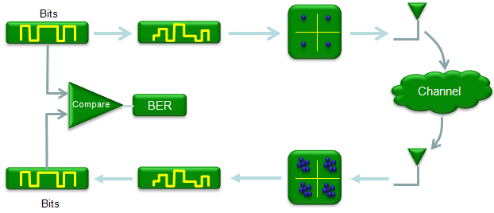
Main idea of Coding is to add some additional bits (we call this as redundancy bits) to original data in a very special way (not in a random/arbitrary way) so that they can be used to detect the exact location of error and correct it. In communication chain, following two blocks are added for this purpose. 'Encoding' is the process of adding redundancy bits and 'Decoding' is the process of extracting the error corrected bits from the received data.
Usually Encoding/Decoding blocks locate as shown below. Encoding takes in the bits stream and produce coded bit stream. Getting in further detail, this encoding often happens in two steps called Source Coding and Channel Coding, but in this post I will just describe this process as a single step.
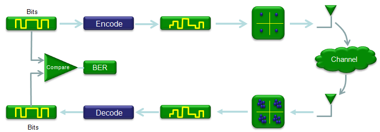
In previous section, I said "Encoding/Decoding is mainly for detecting/correcting erros generated in communication process". It is very good and important step. But once you gain something, you would lose some other things. It is almost nature of everything including our life.
What is the gain for Encoding/Decoding ? It is the received data with less or almost no error. What is the loss ? What is downside of this process ? Following are the major issues caused by Encoding/Decoding process.
Fundamental Questions of Channel Coding
As I said earlier, Coding is adding some redundancy bits to original data and these redundancy bits will be used to detect and correct error in decoding process. There are many different Encoding/Decoding algorithms which has it's own advantage and disadvantages. So we would always have the following question when we implement Coding/Decoding Blocks.
There would not be a simple/clear-cut answers to these questions. In general, the more redundancy bits you add, you would have higher error detection/correction capability. But the more redudancy bit you add, the less throughput you would get because larger portions of transmitted bits should be allocated for the redundancy bits, not for the information that you want to send. So you have to carefully determine how many bits you would allocate for the redundancy bits.
Fortunately in most mobile communication system, somebody else has already determined the answer to these questions. For example, in LTE or WCDMA system.. 3GPP specification specifies all the details of Encoding/Decoding process and you don't have to worry about these questions.
For example, in LTE case, 3GPP 36.212 specifies the Coding algorithm and related parameters as shown below. Chapter 5 of the specification provides all the detailed parameters to implement the coding process.
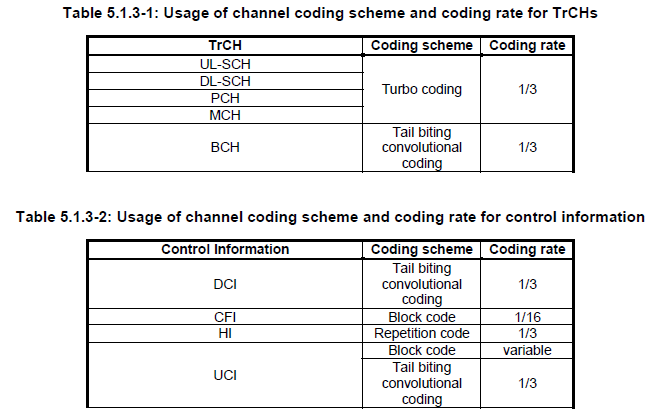
From now, I will introduce some of the basic functions in Matlab/Octave related to Encoding/Decoding. My goal is to extend this section to Turbo Coding/Convolution Coding which is most widely used in mobile communication system, but I am not sure by when I can achieve this goal. Let's just start with the simple things first.
Block Code is an encoding method in which we split the whole input data stream into small blocks and replace the small block (Message) with another small block(Codeword). This process can be illustrated as shown below. The small block getting into the Encoding function is called a 'message' and the block getting out of the Encoding function is called 'Codeword'. We also express this process in a symbol (n,k). n is the number of bits for codeword(output) and k is the number of bits for message (input). n is always greater than k, meaning the length of output (Codeword) is always longer than the length of input(Message).
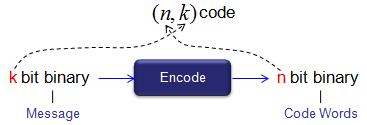
One example of block code is as shown below. In this example, we split the input data stream into 4 bit chunks and replace each of the chunks with 7 bit chunk. The mapping table between each possible 4 bit chunk(input = message) and 7 bit chunk(output = codeword) is shown below.
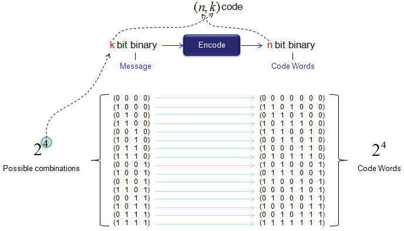
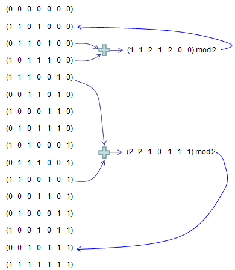
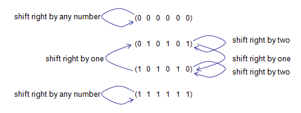
Generation of Linear Block Code
Now you may ask "how can I create a mapping table as shown above ?". The simple answer would be "You can create it in any way as you like ?". Really, Is it true ? Can I use any arbitrary mapping table as pops up in my mind now ? Yes, you can. but it doesn't mean that what you created in arbitrary way would be 'efficient' mapping (coding). Then what would be the efficient coding ? There may be multiple answers to this, but some common answer would be
Generation By Generation Matrix
One of the way to perform coding is to use what is called 'Generator Function'. You might come across this term in any kind of materials related to 'Coding'. My first response when I first heard of this function was 'What the hell, is it ?'. Is it something like those functions that we learned in high school ? It looks similar to what we learned in high school days.. e.g, g(x) = x^4 + x^2 + 1, but the way they are used looks pretty different from high school. My next question was "Why they call it 'Generator Function' ?". I would not try to give you answer to these question here.. you will get it as you proceed. What I am trying to say is "Don't feel yourself as stupid if you have the same questions" -:).
Generator Function is a kind of 'Binary Function' which can perform 'coding' (Convering a message to a codeword) in following manner.
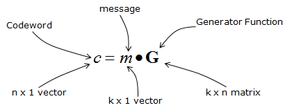
Expressing the equation in more detailed form, it can be expressed as shown below.
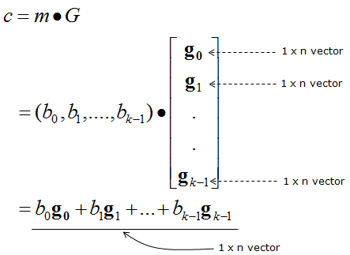
The best way to understand the real meaning of the equation above would be by example. Here goes one example. Let's suppose you have four generating functions g1(x) = 1 + 1 x + 0 x^2 + 1 x^3 + 0 x^4 + 0 x^6 + 0 x^7 = 1 + x + x^3 g2(x) = 0 + 1 x + 1 x^2 + 0 x^3 + 1 x^4 + 0 x^6 + 0 x^7 = 0 + x + x^2 + x^4 g3(x) = 1 + 1 x + 1 x^2 + 0 x^3 + 0 x^4 + 1 x^6 + 0 x^7 = 1 + x + x^2 + x^6 g4(x) = 1 + 0 x + 1 x^2 + 0 x^3 + 0 x^4 + 0 x^6 + 1 x^7 = 1 + x + x^2 + x^7 you can pack these equations into a matrix as shown below. (Note that the lowest order comes leftmost).
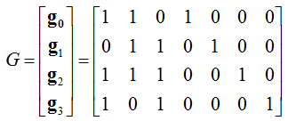
Let's suppose you have a message as shown below.
m = (1 1 0 1)
Now, let's figure out codeword for this message (figure out the output bit stream when this message go through the encoder block). This is the point where we use the generator function shown above. The process to calculate the codeword using the generator function is as shown below.
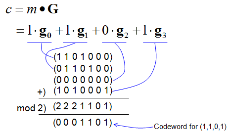
For practice, try all the messages shown in overview section and check if your calculation matches the codewords in the section.
Now let's take a high level view of generator function (generator matrix) and see if there is any recognizable pattern. It is as shown below. You may notice followings right away. i) The number of rows is same as the length of message (number of bits in message) ii) The matrix contains the k x k Identity matrix, where k is the length of the message 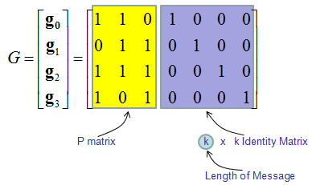
Now you would ask another again. How can I get these generator functions ? (How can I know which generator functions I have to use ?). Don't worry.. in most case these functions/matrix will be given to you from the specification of the communication system. (Of course, there is theoretical background that justifies those generator functions given by the specification and you can refer to Communication Text Books or surf on internet for it. I would not get further into it). In think, just understanding the meaning of the generator functions and how to use them to implement 'encoder' block would be enough in most case.
Now let's look into the codebook we generated from higher level. As shown below, you would notice that the codebook contains the message part as it is at the end and redundant bits at the beginning. This is one of the characteristics of what we call 'linear block coding'.
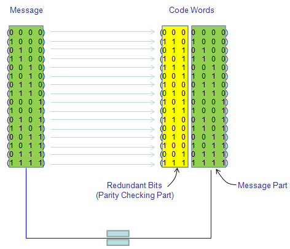
Generation by Generator Polynomial
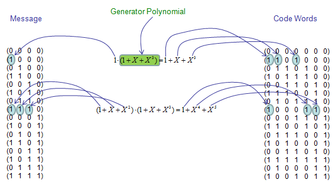
It is hard to cleary explain what is the convolutional code is, but you would get a rough image if you think about the 'convolution' that you learned in your engineering math.
One important criteria for convolutional code would be
How to represent convolutional coding process ?
Representing the convolutional coding process is not simple and clearly explained in short space. So I created a separate page for this(See ConvolutionalCode page).
|